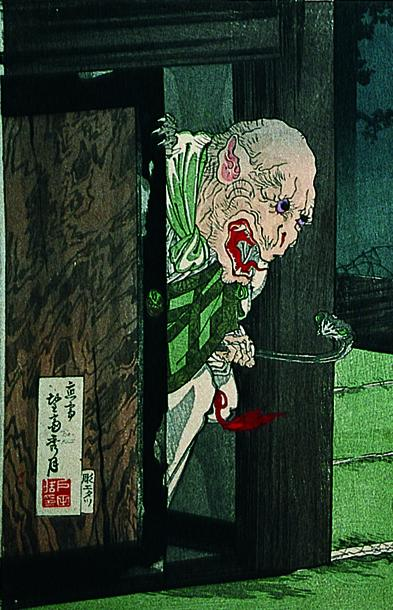

襖から出てきた僧形の化物。左手には蛇を持っている。鼠のような顔で、耳が尖っている。口が裂け、鋭い牙がみえる。
著作者：望斎秀月／出典：親書誌：A5_pushkin_0039：尼子武勇伝；アマゴブユウデン／日付：2011／資源識別子：A5_pushkin_0039_0001_0000
Copyright (c)2010- International Research Center for Japanese Studies, Kyoto, Japan. All rights reserved.